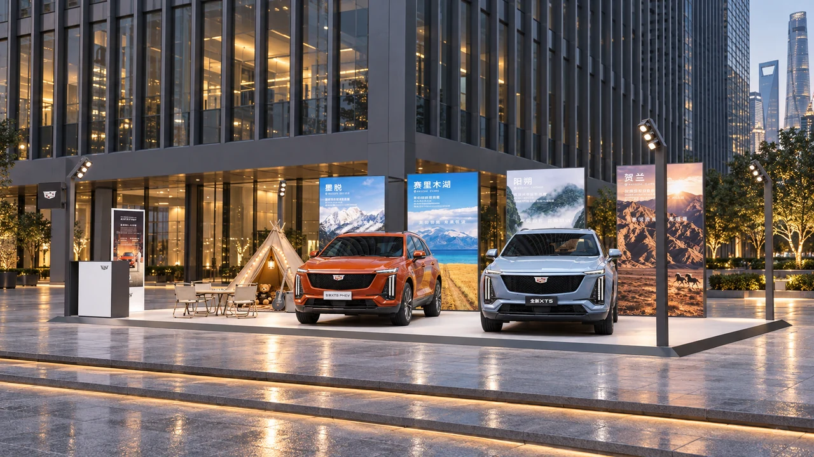
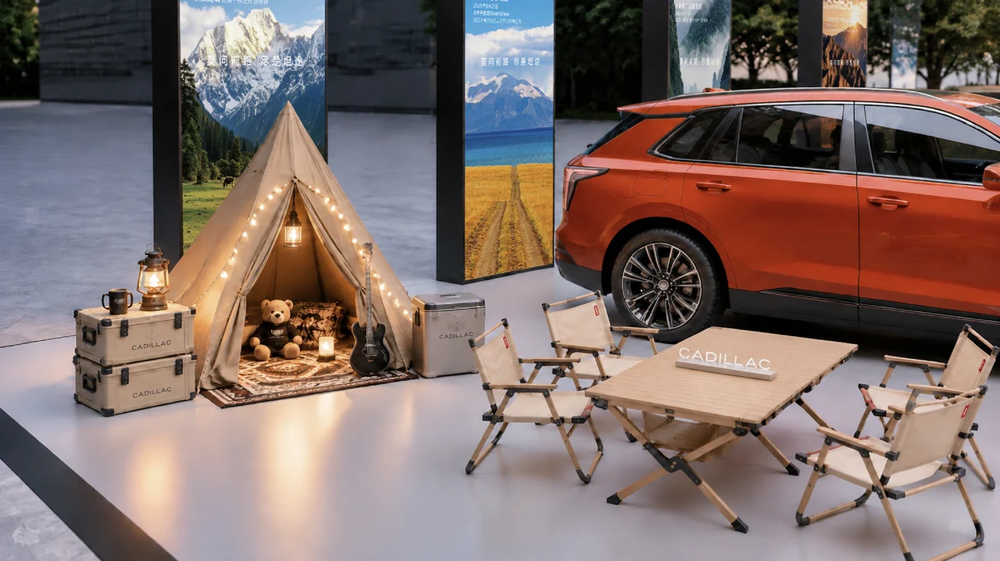
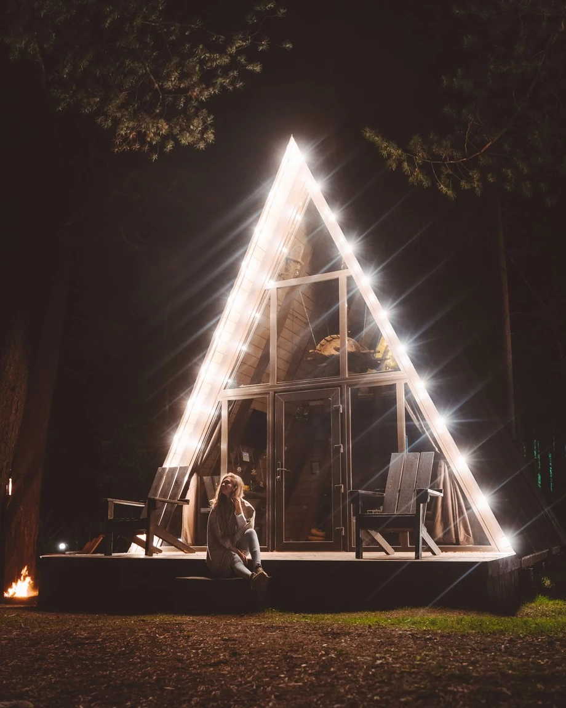
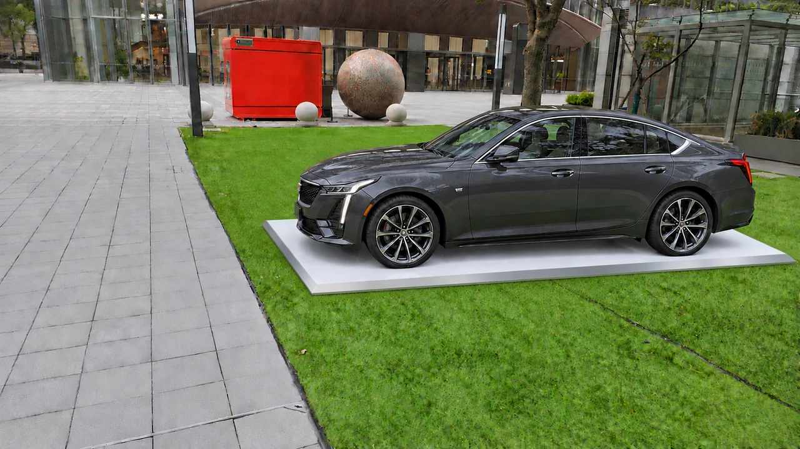

凯迪拉克1 区户外展

户外展主视觉
两台展车并列面向广场，帐篷与桌椅在车旁形成停留区。黄昏方案把车、露营陈设与建筑灯光放进同一个画面。
车旁的露营布置
暖光从小帐篷内部落向折椅和地面，橙色车停在同一展示台的外沿。夜景近图能看到天幕收在车身之后，车头和车门留在较亮的视区。
帐篷旁的暖光
暖光落在帐篷与桌椅上。露营陈设贴近展车，远处的景观立屏把这个角落与广场相连。


露营区夜景

夜景照片让暖光顺着两侧斜边界定入口。原案的帐篷把暖光留在斜顶下，让开口与近处座席从暗环境中显出来。
Philipp Aleev · Pexels 许可日间展区
日间全景把车辆排到开阔地砖前方，竖向宣传面留在后侧。与露营近景并看，能分辨出看车的开敞面和可落座的角落。
日间全景
草坪与入口导视
草坪上的立式导视先在远处显出轮廓。看进展区后，低位物料接到车与休息位之间。


草坪单车陈列

入口导视
完整图集
5 张 · 点图放大